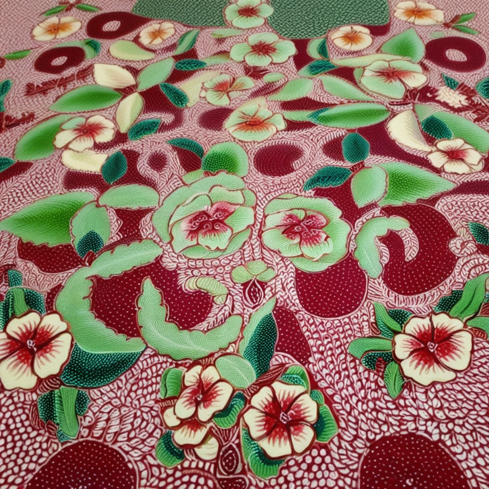
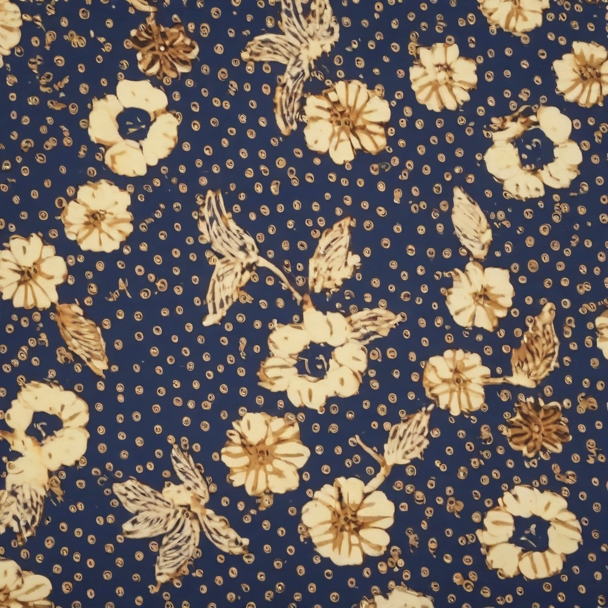
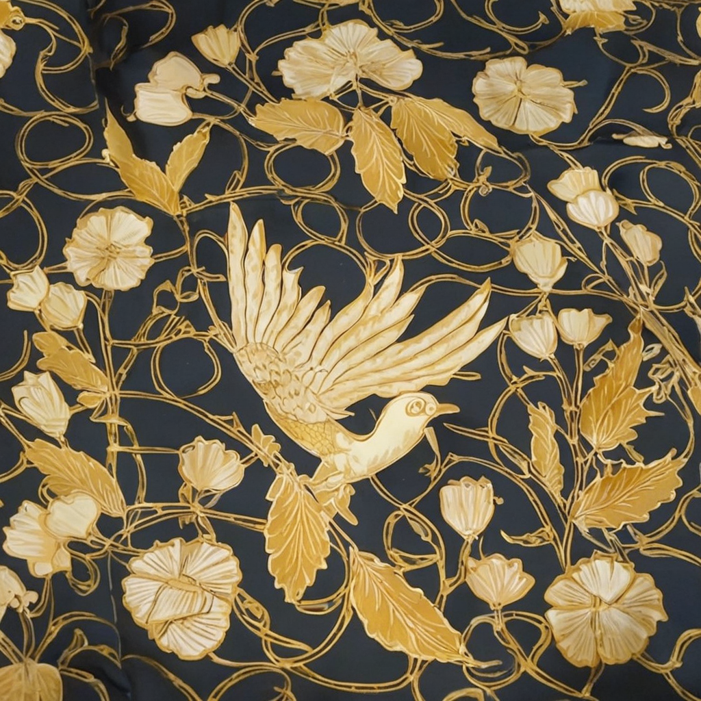
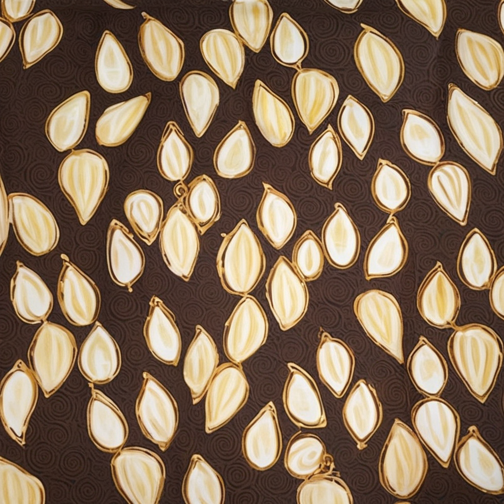
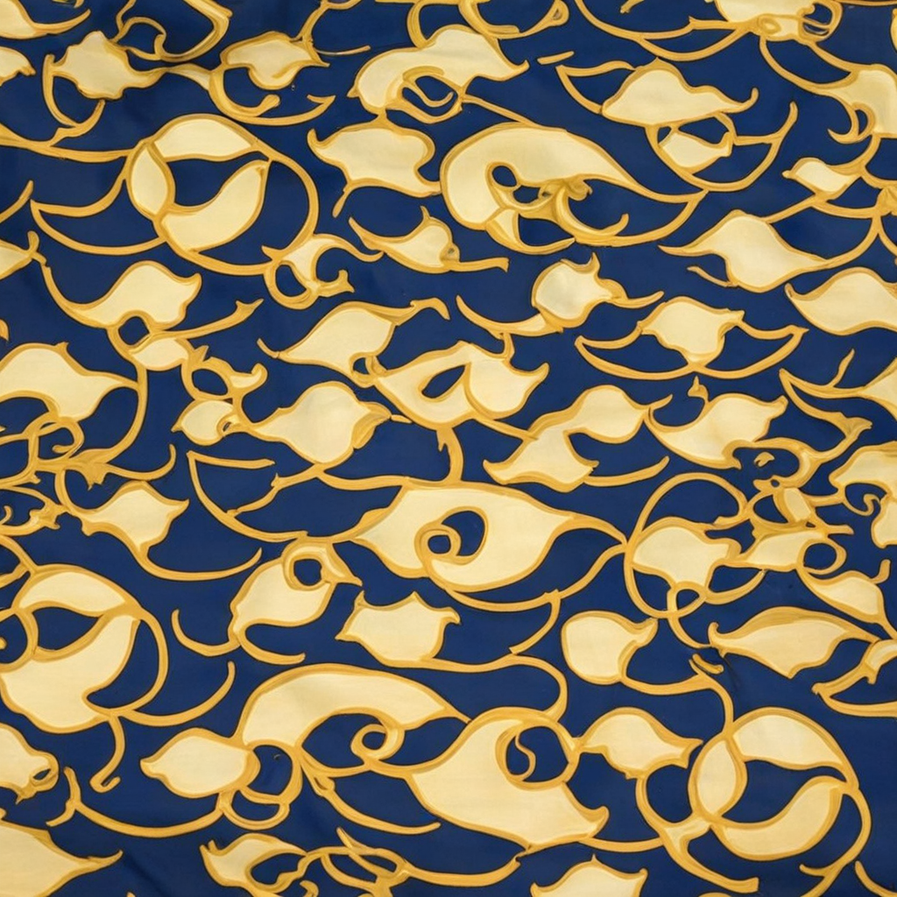
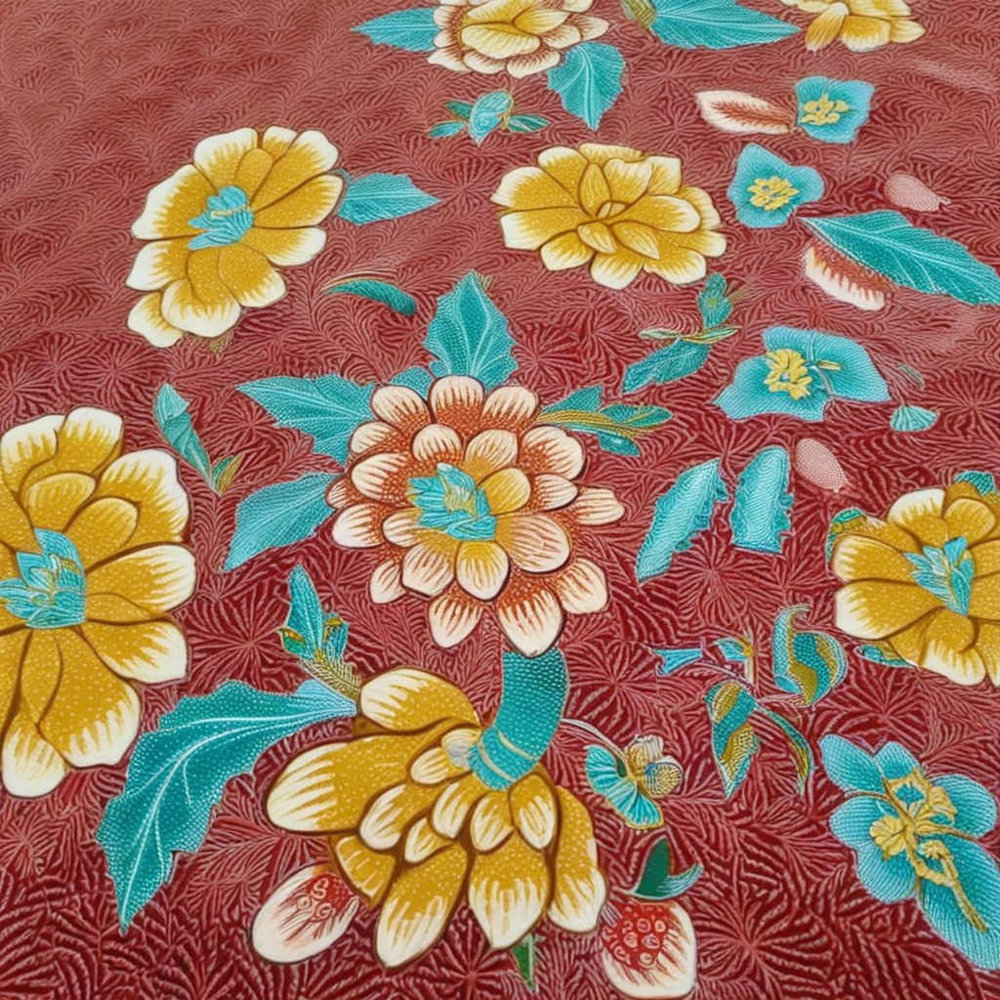
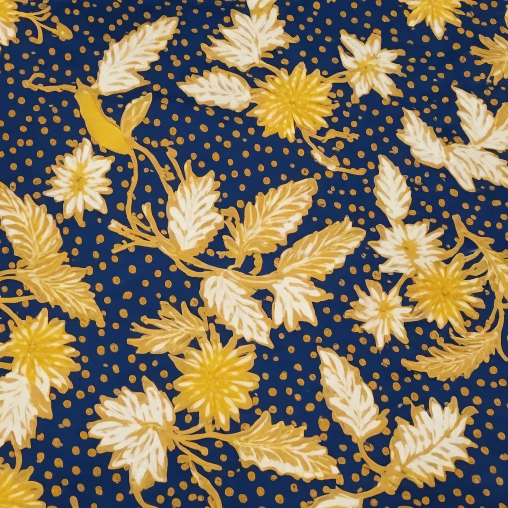
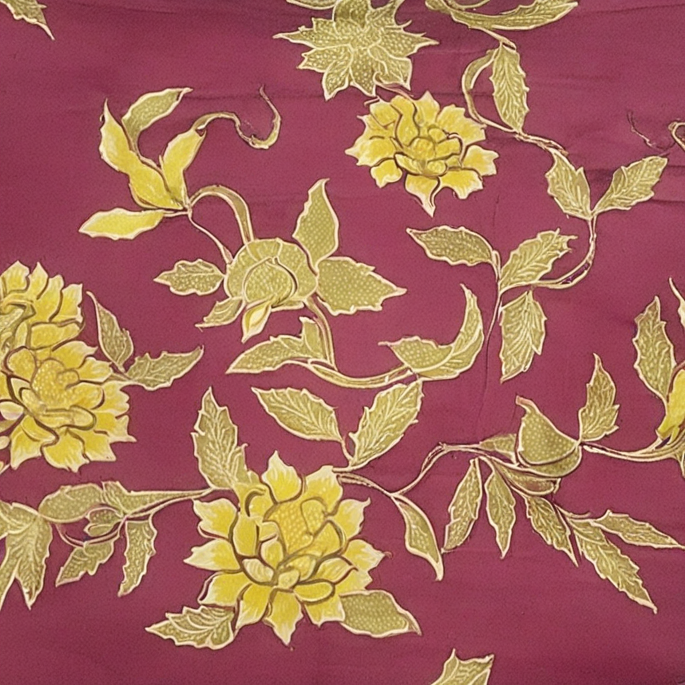
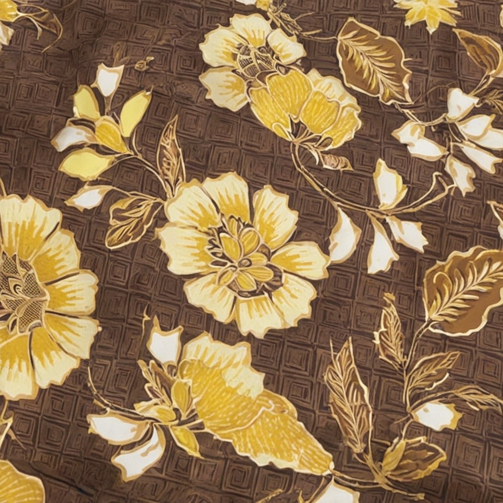
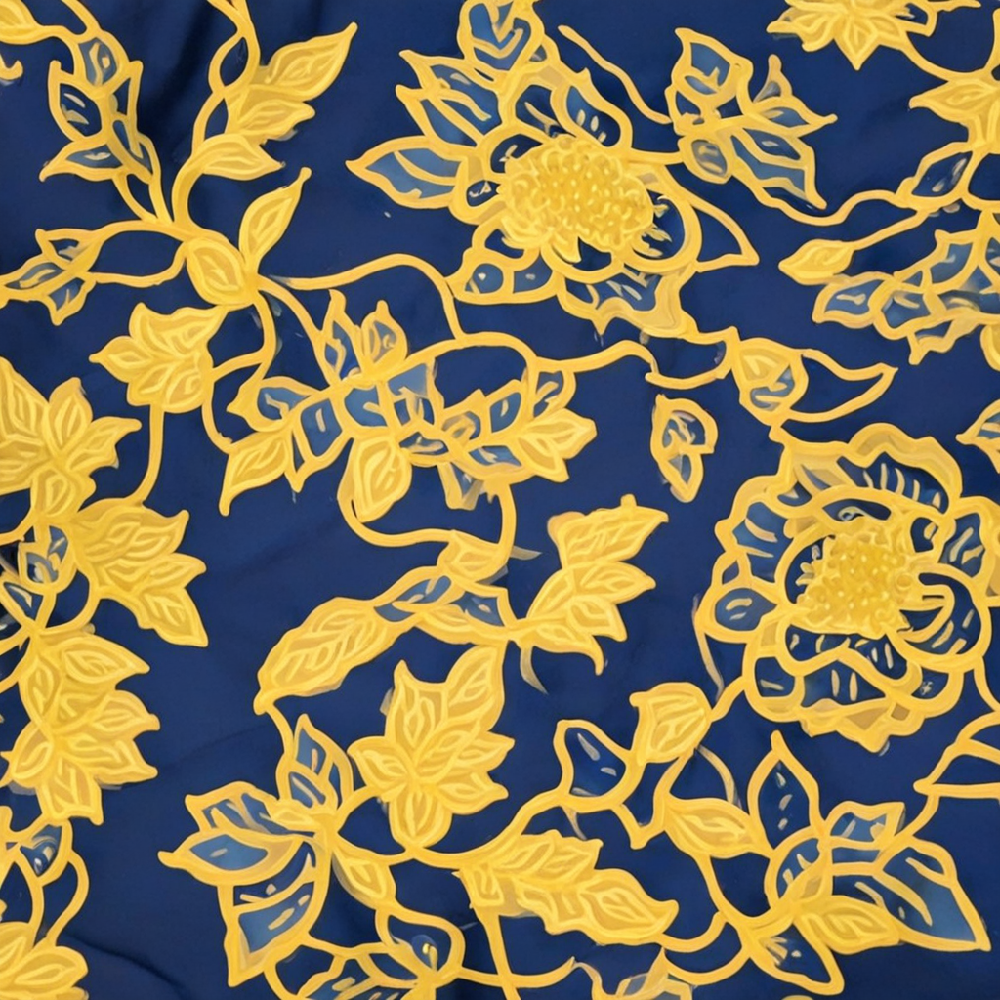

Silang Budaya Batik — Generator Cultural Fusion Batik Nusantara
SDXL + LoRA Joint Training
1
Generator
Pilih budaya yang akan digabungkan dan tulis prompt sesuai keinginan.
2
Template
Menampilkan 10 template

YogyakartaxMadura — Pola Sederhana
Fusion Yogyakarta × Madura — Pola Sederhana
Narasi
Prompt:
a yogyakartabatik madura_pola_sederhanabatik batik pattern, Rich red fabric overlaid with a uniform grid of cream circular medallions, interspersed with bold golden-yellow floral sprigs and flowing vines.

YogyakartaxMadura — Pola Kompleks
Fusion Yogyakarta × Madura — Pola Kompleks
Narasi
Prompt:
a yogyakartabatik madura_pola_kompleksbatik batik pattern, Deep red and green fabric with a dense grid of cream circular medallions, layered beneath vibrant floral sprigs, swirling leaves, and butterflies.

YogyakartaxMadura — Klasik
Fusion Yogyakarta × Madura — Klasik
Narasi
Prompt:
a yogyakartabatik madurabatik batik pattern, Dark navy fabric with a uniform grid of cream circular medallions, accented by stylized floral sprigs, birds, and scattered white dot clusters.

YogyakartaxJawa Timur
Fusion Yogyakarta × Jawa Timur
Narasi
Prompt:
a yogyakartabatik jawa_timurbatik batik pattern, Dark background densely patterned with cream and gold circular medallions, interwoven with stylized tropical birds, bamboo stalks, and warm floral sprigs.

YogyakartaxJawa Tengah
Fusion Yogyakarta × Jawa Tengah
Narasi
Prompt:
a yogyakartabatik jawa_tengahbatik batik pattern, Dark brown fabric combining a uniform grid of cream circular medallions with flowing abstract swirls and small geometric accents in gold and beige.

YogyakartaxJawa Barat
Fusion Yogyakarta × Jawa Barat
Narasi
Prompt:
a yogyakartabatik jawa_baratbatik batik pattern, Deep navy fabric where a dense grid of cream circular medallions meets flowing gold cloud-like swirls, blending geometric precision with soft wave-like motion.

Madura — Pola SederhanaxMadura — Pola Kompleks
Fusion Madura — Pola Sederhana × Madura — Pola Kompleks
Narasi
Prompt:
a madura_pola_sederhanabatik madura_pola_kompleksbatik batik pattern, Rich red fabric dense with bold golden-yellow floral sprigs and blossoms, layered beneath vibrant swirling leaves and butterflies in teal and orange.

Madura — Pola SederhanaxMadura — Klasik
Fusion Madura — Pola Sederhana × Madura — Klasik
Narasi
Prompt:
a madura_pola_sederhanabatik madurabatik batik pattern, Dark navy fabric scattered with bold golden-yellow floral sprigs and blossoms, accented by cream stylized birds and clusters of small white dots.

Madura — Pola SederhanaxJawa Timur
Fusion Madura — Pola Sederhana × Jawa Timur
Narasi
Prompt:
a madura_pola_sederhanabatik jawa_timurbatik batik pattern, Rich red fabric dense with golden-yellow floral sprigs and flowing vines, interwoven with stylized tropical birds and slender bamboo stalks.

Madura — Pola SederhanaxJawa Tengah
Fusion Madura — Pola Sederhana × Jawa Tengah
Narasi
Prompt:
a madura_pola_sederhanabatik jawa_tengahbatik batik pattern, Dark brown fabric blending bold golden-yellow floral sprigs and blossoms with flowing abstract swirls and small geometric accents in cream.
3
Terapkan ke Baju
Template yang dipilih akan diterapkan ke pola pakaian menggunakan segmentasi area pakaian (rembg u2net_cloth_seg).
Belum ada template dipilih
Pilih template di atas untuk diterapkan ke baju
Fitur ini akan aktif setelah template dipilih.
Pada aplikasi Gradio interaktif, simulasi memakai segmentasi area
pakaian (rembg u2net_cloth_seg) + Feathered Seams tiling.